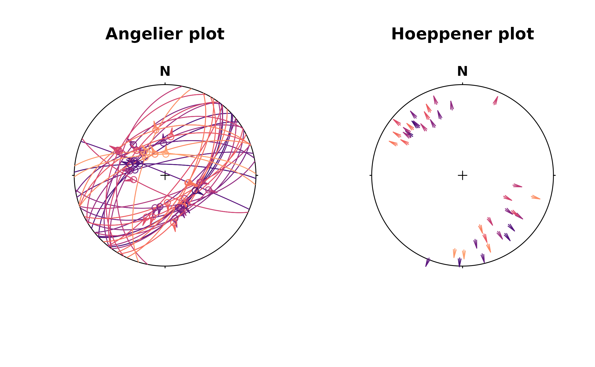
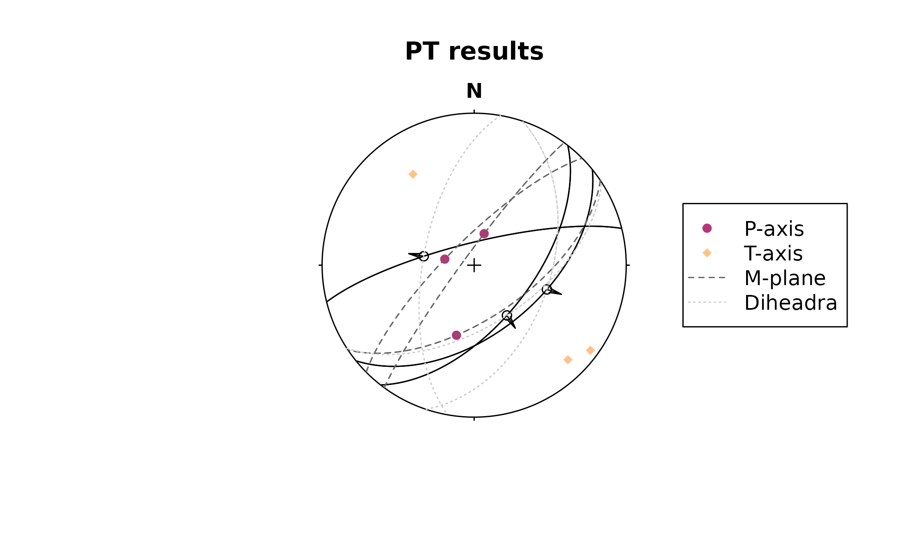
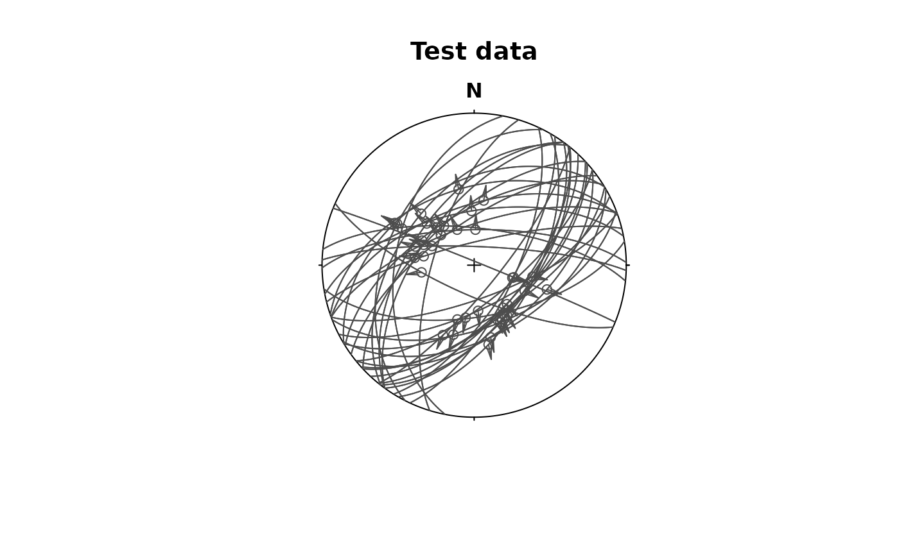
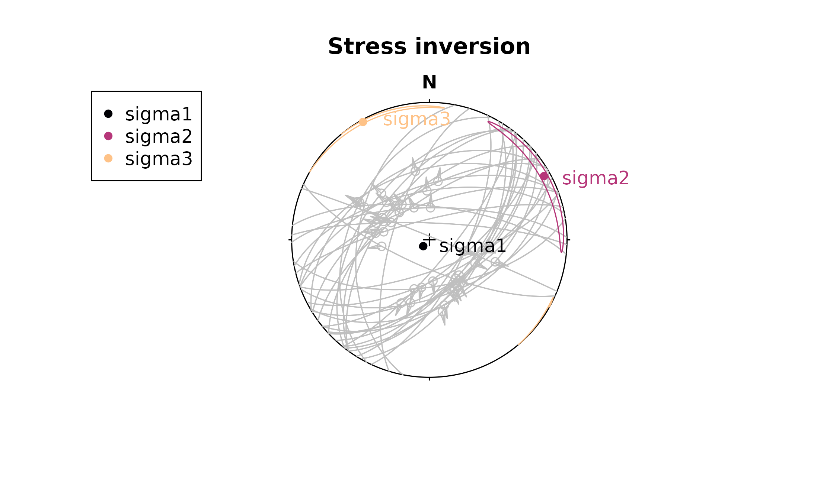
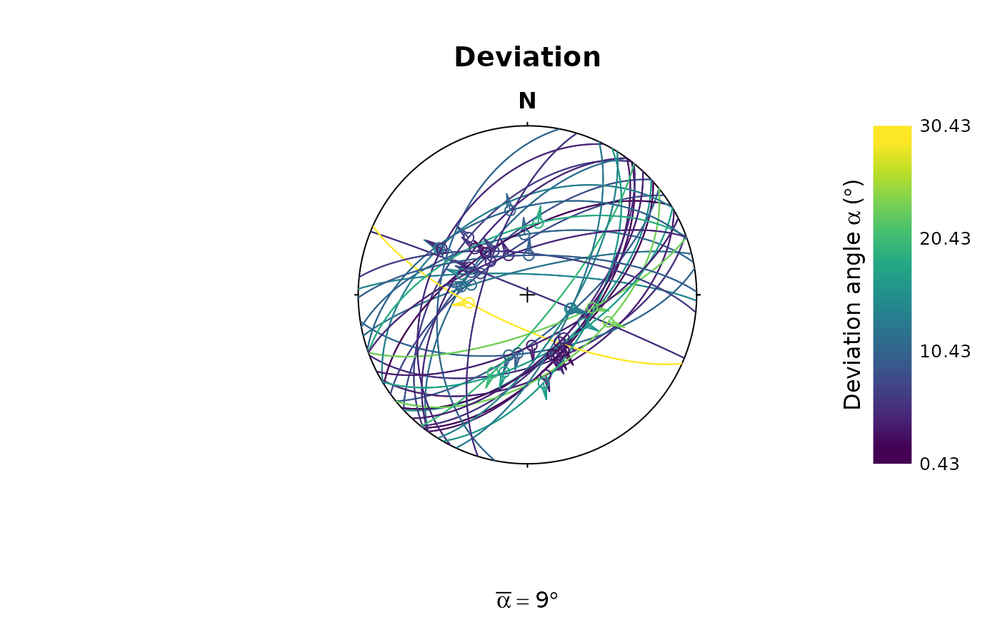
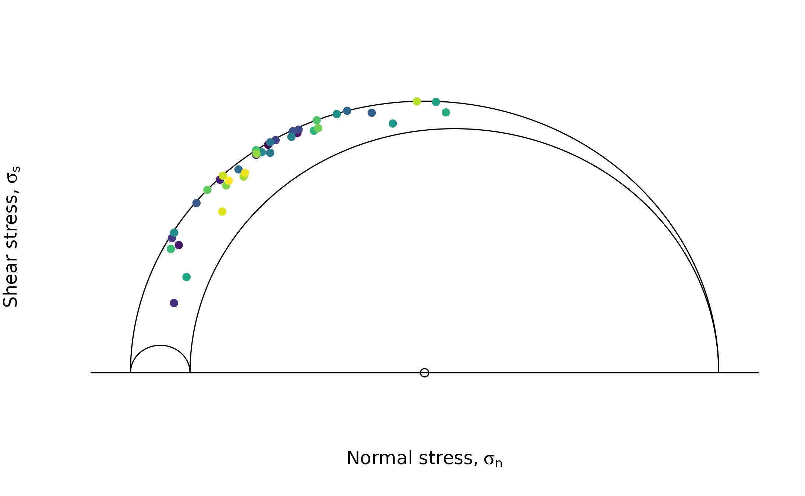

This tutorial demonstrates the "Fault" object. It also
shows how you can extract paleo-stress directions from fault slip
data.
Fault objects
A fault is given by the orientation of its plane (dip direction and dip angle), the orientation of the slip (e.g. measured from striae, given in azimuth and plunge angles), and the sense of displacement:
my_fault <- Fault(120, 50, 60, 110, sense = -1)Sense of fault displacement is 1 or -1 for normal or thrust offset, respectively.
Rake of the fault, i.e. the angle between fault slip vector and fault strike:
Fault_rake(my_fault)## [1] -107.2294Define a fault by just knowing the orientation of the fault plane, the sense, and the rake
# 1. Define a plane through dip direction, dip angle
fault_plane <- Plane(c(120, 120, 100), c(60, 60, 50))
# 2. Define a fault through the plane and rake angle:
Fault_from_rake(fault_plane, rake = c(84.7202, -10, 30))## Fault object (n = 3):
## dip_direction dip azimuth plunge sense
## [1,] 120 60 109.52858 59.581591 1
## [2,] 120 60 24.96163 -8.649165 -1
## [3,] 100 50 30.36057 22.521012 1Often, measured orientation angles can be (slightly) imprecise and subjected to some random noise. Thus the slip vector will not lie (perfectly) on the fault plane, judging by the measurements. To correct the measurements so that this will not be the case:
p <- Pair(120, 60, 110, 58)
misfit_pair(p)## $fvec
## Vector (Vec3) object (n = 1):
## x y z
## 0.4306083 -0.7432653 0.5119893
##
## $lvec
## Vector (Vec3) object (n = 1):
## x y z
## -0.1752490 0.4876331 0.8552787
##
## $misfit
## [1] 0.02793105
correct_pair(p)## Pair object (n = 1):
## dip_direction dip azimuth plunge
## 120.08572 59.20357 109.76778 58.79054A
"Pair"object is a container of associated plane and line measurements. Basically like a fault without the sense of displacement.
Plotting faults
Fault objects consist of planes (fault plane), lines (e.g. striae), and the sense of movement. There are two ways how these combined features can be visualized, namely the Angelier and the Hoeppener plot.
- The Angelier plot shows all planes as great circles and lineations as points (after Angelier, 1984). Fault striae are plotted as vectors on top of the lineation pointing in the movement direction of the hanging wall. Easy to read in case of homogeneous or small datasets.
- The Hoeppener plot shows all planes as poles while lineations are not shown (after Hoeppener, 1955). Instead, fault striae are plotted as vectors on top of poles pointing in the movement direction of the hanging wall. Useful in case of large or heterogeneous datasets.
# simongomez is a example fault dataset:
# define some colors for each fault in the dataset (here the fault sense)
fault_cols <- assign_col(simongomez[, 5], pal = viridis::magma, begin = .2, end = .8)
par(mfrow = c(1, 2))
stereoplot(title = "Angelier plot")
angelier(simongomez, col = fault_cols)
stereoplot(title = "Hoeppener plot")
hoeppener(simongomez, col = fault_cols, points = FALSE)
Fault stress analysis
The Wallace-Bott hypothesis states that fault slip occurs parallel to the maximum shear stress. This allows to reconstruct stress axes using fault-slip data. {structr} offers several techniques to calculate the orientation of principal stress axes, the simple P-T method, and a fault-slip inversion technique.
P-T method
This simple technique calculates PT-axes, kinematic plane (M), and dihedra separation plane (d).
First we load some example data (here the first three faults from the TYM dataset by from Angelier, 1990)1
## Fault object (n = 3):
## dip_direction dip azimuth plunge sense
## [1,] 137 61 117.0135 59.46650 1
## [2,] 128 59 146.8990 57.58045 1
## [3,] 2 80 287.5304 56.63295 1## $p
## Line object (n = 3):
## azimuth plunge
## [1,] 340.6153 72.15071
## [2,] 281.6092 73.96385
## [3,] 214.3217 45.50717
##
## $t
## Line object (n = 3):
## azimuth plunge
## [1,] 129.6815 15.44075
## [2,] 135.2532 13.45689
## [3,] 336.9158 27.88916
##
## $m
## Plane object (n = 3):
## dip_direction dip
## [1,] 222.11395 98.73567
## [2,] 223.18909 81.43997
## [3,] 85.80721 121.45768
##
## $d
## Plane object (n = 3):
## dip_direction dip
## [1,] 117.0135 149.4665
## [2,] 146.8990 147.5804
## [3,] 287.5304 146.6330Plot the results
stereoplot(title = "PT results", guides = FALSE)
fault_plot(my_fault2)
points(my_fault2_PT$p, col = "#B63679FF", pch = 16)
points(my_fault2_PT$t, col = "#FEC287FF", pch = 18)
lines(my_fault2_PT$t, lty = 2, col = "grey40")
lines(my_fault2_PT$d, lty = 3, col = "grey80")
legend("right",
legend = c("P-axis", "T-axis", "M-plane", "Diheadra"),
col = c("#B63679FF", "#FEC287FF", "grey40", "grey80"),
pch = c(16, 18, NA, NA), lty = c(NA, NA, 2, 3)
)
Fault slip inversion
Our goal is to find the single uniform stress tensor that most likely caused the faulting events. With only slip data to constrain the stress tensor the isotropic component can not be determined, unless assumptions about the fracture criterion are made. Hence inversion will be for the deviatoric stress tensor only. A single fault can not completely constrain the deviatoric stress tensor a, therefore it is necessary to simultaneously solve for a number of faults, so that a single a that best satisfies all of the faults is found.
This is equivalent to assuming that the stress field is a constant tensor within the region being studied for the duration of the faulting event.
{structr} provides four numerical solutions to determine the orientation of the principal stresses from fault slip data.
Michael (1984): Direct inversion method2 which uses bootstrapping for confidence intervals of the stress estimates.
Angelier (1990): Direct inversion method3 coupled with the iterative optimization after Mostafa (2005)4 to find the best fit reduced stress tensor.
Yamaji & Sato (2006): Direct inversion method using the 5-dimensional parameter space5.
Hansen (2013): Direct inversion using a 9-dimensional parameter space, useful when vorticity affects the fault-slip data6.
First we load some example data (here the data from Angelier, 1990)7
fault_data <- angelier1990$TYM
stereoplot(title = "Test data", guides = FALSE)
fault_plot(fault_data, col = "grey30")
The stress inversion using the Michael method with 10 bootstraps:
inv_res <- slip_inversion(fault_data, method = "michael", n_iter = 10)
# Average alpha angle
inv_res$misfit$alpha## [1] 19.0581833 0.4300616 17.6971171 8.5078919 9.3257870 5.9565593
## [7] 15.0070188 1.1696222 12.2657156 6.2970707 12.1518725 7.3901878
## [13] 4.3095800 12.5543133 1.0365795 13.9582802 3.2573252 5.5898020
## [19] 28.9782473 29.3190948 12.5920654 16.1272918 37.6709469 4.6992775
## [25] 5.0514715 25.5265174 21.6148031 23.1509507 3.9315776 20.8077306
## [31] 17.5255311 3.9282757 15.8194428 12.8556026 5.1748022 6.1157113
## [37] 7.4467402 11.3905892
# Average resolved shear stress
inv_res$tau_mean## [1] 0.9289024To check the accuracy of the solution, you can evaluate
- the average angle β between the tangential traction predicted by the best stress tensor and the slip vector on each plane (ideally close to 0), and
- the average resolved shear stress on each plane (should be close to 1).
- the average “Ratio Upsilon” (RUP) parameter after Angelier (1990), ranging from 0 (perfect fit) to 200% (misfit)
To visualizing the orientation of the principal stresses and the confidence region of the axes, you may use the [stereoplot()] functions from {structr}
cols <- c("#000004FF", "#B63679FF", "#FEC287FF")
stereoplot(title = "Stress inversion", guides = FALSE)
fault_plot(fault_data, col = "grey75")
stereo_confidence(inv_res$principal_axes_CI$sigma1, col = cols[1])
stereo_confidence(inv_res$principal_axes_CI$sigma2, col = cols[2])
stereo_confidence(inv_res$principal_axes_CI$sigma3, col = cols[3])
text(inv_res$principal_axes,
label = rownames(inv_res$principal_axes),
col = cols, adj = -.25
)
legend("topleft",
col = cols,
legend = rownames(inv_res$principal_axes), pch = 16
)
The stress shape ratio after Angelier (1979)8:
inv_res$stress_shape$phi## [1] 0.101247
# 95% confidence interval
inv_res$phi_CI## [1] 0.08715034 0.15052106The angle α is the angle between the tangential traction predicted by the best stress tensor and the slip vector. This deviation can be visualized in the stereoplot:
alpha <- inv_res$misfit$alpha
stereoplot(
title = "Deviation",
sub = bquote(bar(alpha) == .(round(inv_res$alpha)) * degree),
guides = FALSE
)
fault_plot(fault_data, col = assign_col(alpha))
legend_col(
seq(min(alpha), max(alpha), 10),
title = bquote("Deviation angle" ~ alpha ~ "(" * degree * ")")
)
stress_components <- tau2shearnorm(inv_res$stress_tensor, fault_data, friction = 0.6)
Mohr_plot(
sigma1 = inv_res$principal_vals[1],
sigma2 = inv_res$principal_vals[2],
sigma3 = inv_res$principal_vals[3],
unit = NULL, include.zero = FALSE
)
points(stress_components[, 'normal'], abs(stress_components[, 'shear']),
col = assign_col(alpha), pch = 16
)
Maximum horizontal stress
The orientation of the maximum horizontal stress () can be calculated from the stress tensor the the orientation of the principal stress (, , ) axes their their relative magnitudes () 9.
First, we define the orientation of the principle stress axes:
To get , which is perpendicular to and , we calculate the cross-product of the two vectors:
S2 <- crossprod(S3, S1)The azimuth of
for a given stress ratio R = 1:
SH(S1, S2, S3, R = 1) # in degrees## [1] 70.89For a several stress ratios:
## R SH
## [1,] 0.0 13.01021
## [2,] 0.1 13.37695
## [3,] 0.2 13.84162
## [4,] 0.3 14.44908
## [5,] 0.4 15.27621
## [6,] 0.5 16.46586
## [7,] 0.6 18.31445
## [8,] 0.7 21.53704
## [9,] 0.8 28.23884
## [10,] 0.9 45.01043
## [11,] 1.0 70.89000The direction for our slip inversion result from above:
inv_shmax <- SH(
S1 = inv_res$principal_axes[1, ],
S2 = inv_res$principal_axes[2, ],
S3 = inv_res$principal_axes[3, ],
R = inv_res$stress_shape$R
)
print(inv_shmax)## [1] 60.80844This (or any) direction can be added as compression arrows to a stereoplot using [stereo_shmax()]:
stereoplot(title = "Stress inversion", guides = FALSE)
fault_plot(fault_data, col = "grey75")
stereo_confidence(inv_res$principal_axes_CI$sigma1, col = cols[1])
stereo_confidence(inv_res$principal_axes_CI$sigma2, col = cols[2])
stereo_confidence(inv_res$principal_axes_CI$sigma3, col = cols[3])
text(inv_res$principal_axes,
label = rownames(inv_res$principal_axes),
col = cols, adj = -.25
)
stereo_shmax(inv_shmax)References
Angelier, J. (1979). Determination of the mean principal directions of stresses for a given fault population. Tectonophysics, 56(3–4), T17–T26. https://doi.org/10.1016/0040-1951(79)90081-7
Angelier, J. (1990). Inversion of field data in fault tectonics to obtain the regional stress—III. A new rapid direct inversion method by analytical means. Geophys. J. Int, 103, 363–376. https://doi.org/10.1111/j.1365-246X.1990.tb01777.x
Hansen, J. A. (2013). Direct inversion of stress, strain or strain rate including vorticity: A linear method of homogenous fault-slip data inversion independent of adopted hypothesis. Journal of Structural Geology, 51, 3–13. https://doi.org/10.1016/j.jsg.2013.03.014
Lund, B., & Townend, J. (2007). Calculating horizontal stress orientations with full or partial knowledge of the tectonic stress tensor. Geophysical Journal International, 170(3), 1328–1335. https://doi.org/10.1111/j.1365-246X.2007.03468.x
Michael, A. J. (1984). Determination of stress from slip data: Faults and folds. Journal of Geophysical Research: Solid Earth, 89(B13), 11517–11526. https://doi.org/10.1029/JB089iB13p11517
Mostafa, M. E. (2005). Iterative direct inversion: An exact complementary solution for inverting fault-slip data to obtain palaeostresses. Computers & Geosciences, 31(8), 1059–1070. https://doi.org/10.1016/j.cageo.2005.02.012
Yamaji, A., & Sato, K. (2006). Distances for the solutions of stress tensor inversion in relation to misfit angles that accompany the solutions. Geophysical Journal International, 167(2), 933–942. https://doi.org/10.1111/j.1365-246X.2006.03188.x